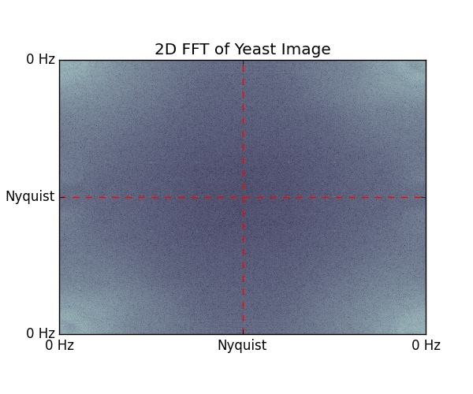
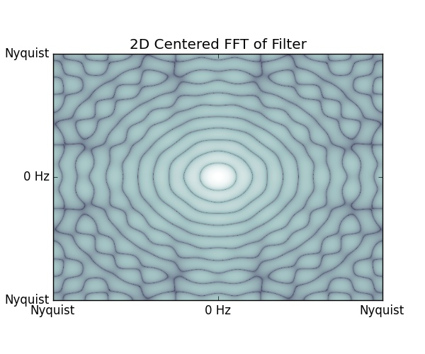
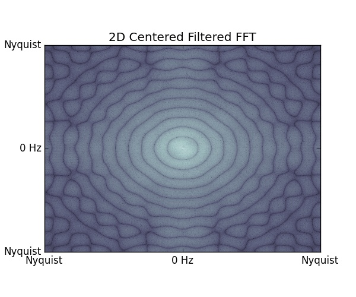
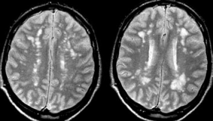

Digital Signal Processing
Spatial Filtering
David Joy
October, 13th, 2015
Context
- Upper division signal processing course
- Mid-way through the course
- Covered most of the boring mathy bits
- Now we can start doing some fun stuff!
Review
- Time Domain Signals
- Frequency Domain Signals
- Fourier Transform
- Convolution
Today
Spatial filtering and the 2D Fourier Transform
Blob Counting!
Blob Counting
Why count blobs?

Blob Counting
But I could just do it manually!
Blob Counting
But I could still do it manually!

Blob Counting
Okay now it's dumb
1D Boxcar Filter
Let's Assume Cells are Circles!
https://rpseawright.files.wordpress.com/2013/08/spherical-cow2.png
{kind=link}
2D Boxcar Filter
Start with our Original Image
2D Fourier Transform
2D Transform Centered
2D Transform Filter
After Convolution
Inverse 2D Fourier Transform
It (Mostly) Works!

Total: 269 cells
Probably a little high...
Even on the Large Image
Total: 973 cells
Applications
Finding other kinds of cellsApplications
Finding lesions in the brain